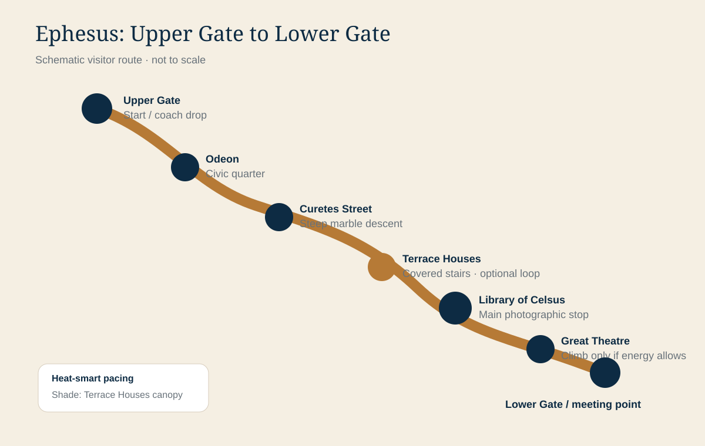

Ephesus chapters
ExcursionAncient Ephesus
Departure12:45 PM
Duration3 hours
EffortUneven + downhill
Your Ephesus field guide
Use this chapter as a fast briefing before departure and as a visual companion through the ruins. It follows the common upper-to-lower-gate sequence and keeps the Library, Terrace Houses and Great Theatre easy to find.
Ancient Ephesus
MeetConfirm onboard location in Viking Daily
CarryWater, hat, sunscreen, secure shoes
PriorityLibrary façade + Curetes Street
OptionalTerrace Houses only if tour timing permits
Protect energy early
The marble reflects heat and most of the route is exposed. Drink before leaving the ship, use the covered Terrace Houses as a cooling reset if included, and avoid unnecessary climbs.

Orientation
Map & walking route
Upper Gate to Lower Gate, with shade, restrooms and decision points.

Signature monument
Library of Celsus
Façade details, history, viewpoints and a practical crowd strategy.

Roman domestic life
Terrace Houses
Mosaics, frescoes, stairs and whether the optional visit fits your tour.

Monumental scale
Great Theatre
Acoustics, harbor axis and the best low-effort viewing position.
Site route at a glance
